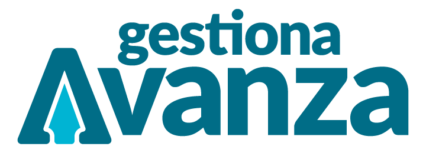
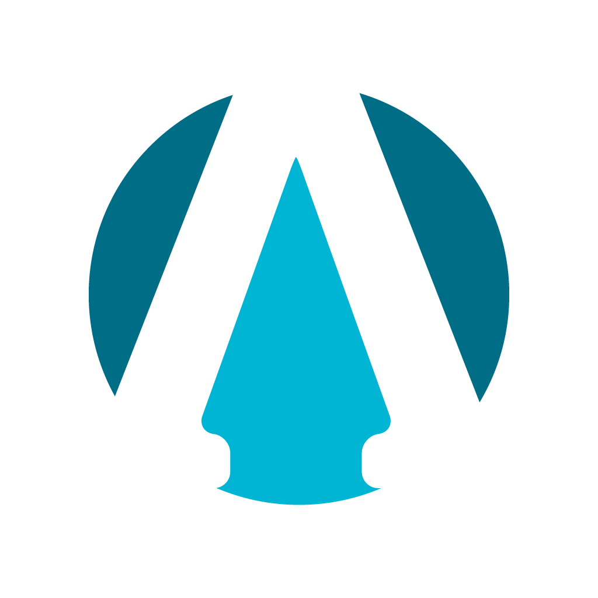

Academy
Formación estructurada: cursos, itinerarios y sesiones con mayor profundidad.
Forma.

BytesPlan de comunicación, contenido y marca del canal de microformación
Gestiona Avanza Bytes es el canal de microformación audiovisual de Gestiona Avanza: vídeos verticales que enseñan una funcionalidad concreta de Gestiona cada vez, producidos por los especialistas de gestión del conocimiento de esPublico.
Vídeo vertical 9:16, una sola idea por Byte
Una misma estructura: Aprende · Aplica · Avanza
Cuentas propias en LinkedIn, YouTube, Instagram, X y TikTok
Piloto de 8 semanas: 16 Bytes
Formación estructurada: cursos, itinerarios y sesiones con mayor profundidad.
Forma.
Espacio de relación, participación e intercambio de experiencias.
Conecta.
Microaprendizaje: descubre funcionalidades, resuelve tareas y conoce las novedades.
Acompaña en el día a día.
| Objetivo | KPI principal | KPI secundario |
|---|---|---|
| Llegar | Alcance único mensual por red | Seguidores nuevos al mes |
| Enseñar | Retención media (% del vídeo visto) | Reproducciones completas |
| Ser útil | Guardados + compartidos por Byte | Comentarios con dudas |
| Transferir | Clics con UTM a Academy y Community | Menos consultas al soporte sobre temas cubiertos |
Criterios del piloto: retención media > 60 % · al menos una tipología destacada en guardados · 10 dudas convertidas en nuevos Bytes. Las metas numéricas se fijan con la línea base del piloto.
| Perfil | Qué busca en Bytes | Promesa |
|---|---|---|
| Tramitación | Agilidad, trucos, errores frecuentes | "Ahorra clics y tiempo en lo de cada día" |
| Habilitados nacionales | Firma, libros oficiales, control | "Haz con seguridad lo que la norma te pide" |
| Responsables políticos | Firmar y consultar rápido, también en el móvil | "Firma y consulta desde donde estés" |
| Atención ciudadana | Registro, sede, notificaciones | "Atiende y registra mejor, a la primera" |
| TIC y administración | Configuración, permisos, novedades | "Configura bien y conoce cada novedad" |
| Nuevas incorporaciones | Fundamentos y vocabulario | "Trabaja con Gestiona desde el primer día" |
Cada Byte indica su nivel: Básico · Intermedio · Avanzado.
Mensajes paraguas
| Somos | No somos |
|---|---|
| Cercanos, de tú | Coloquiales en exceso |
| Precisos con el vocabulario | Jerga sin explicar |
| Prácticos: resultado primero | Teóricos |
| Positivos con el error | Culpabilizadores |
| Fiables | Comerciales |
Una idea. Un Byte. Una oportunidad para avanzar.
Funcionalidades útiles y poco conocidas.
"¿Sabías que puedes…?" → "No sabía que existía"
Trabajar de forma más ágil y eficiente.
"¿Has probado a…?" → "Voy a probarlo así"
Un procedimiento concreto, paso a paso.
"¿Sabes cómo…?" → "Ahora sé hacerlo"
Novedades y evolución de Gestiona.
"¿Has visto que ahora puedes…?" → "Quiero usarla"
Porcentaje = peso en el calendario editorial. Temas desde soporte, especialistas, notas de versión, comentarios y Academy.
Aprende
0–4 s · la pregunta de la tipología
Aplica
4–18 s · la interfaz es protagonista, 3 pasos como máximo
Avanza
2–4 s · resultado y beneficio
Firma
1–2 s · la "A" y el isotipo
Grabado en el entorno de pruebas de Gestiona · subtítulos siempre · hasta ~40 s si hace falta
| Red | Papel | Formato | Llamada a la acción |
|---|---|---|---|
| YouTube | Biblioteca permanente y buscador | Shorts + listas por área y tipología | Lista relacionada · Academy |
| Comunidad profesional: habilitados, TIC, decisores | Vídeo nativo + carrusel mensual | Comentar · Community | |
| Hábito de tramitadores | Reels + destacados por tipología | "Guárdalo para cuando lo necesites" | |
| TikTok | Descubrimiento; nuevas incorporaciones | Vídeo + respuestas en vídeo | Seguir · comentar |
| X | Novedades y difusión rápida | Vídeo + texto breve | YouTube · Academy |
Cuentas propias «Gestiona Avanza Bytes» (usuario propuesto @gestionaavanzabytes) · martes y jueves · un único destino por pieza, con UTM.
Bytes no crea una marca nueva: aplica la identidad de Gestiona Avanza al vídeo vertical
Color
#032029#006d87#00b4d3El cian no lleva texto sobre claro (2,48:1). Sobre petróleo 950 llega a 6,82:1. El color de tipología solo marca filo e icono.
Tipografía · pesos 400 / 500 / 700
Roboto Slab 700¿Sabías que puedes…?
Roboto 500Pasos, rótulos y subtítulos
Roboto MonoGAB-SQ-007
Forma
¿Sabías que puedes firmar en bloque?
01 Aprende0–4 s
02 Aplica4–18 s
20 firmas en un solo paso
03 Avanza2–4 s
Aprende
Aplica
Avanza

Gestiona Avanza Bytes04 Firma1–2 s
Maqueta ilustrativa. Lienzo 1080 × 1920, fondo petróleo 950, zonas seguras arriba (~220 px) y abajo (~350 px). El ejemplo de "firmar en bloque" es orientativo.
Tema del backlog
5 min
Plantilla de guion
20 min
Entorno de pruebas
20–30 min
Plantilla de vídeo y subtítulos
45–60 min
Otro especialista
15 min
Las 5 redes
15 min
Catálogo y métricas
5 min
CoordinaciónBacklog, calendario, catálogo e informe mensual
AutorDel guion a la programación
Revisión cruzadaExactitud técnica, checklist y marca
Guardia de comentariosRotatoria semanal; respuesta en 24 h
Reserva de seguridad: 4 Bytes terminados por delante. Docentes: los Bytes sirven como material previo o de repaso en Academy.
4 semanas
◆ 6 Bytes listos
8 semanas
◆ Criterios del piloto cumplidos
Meses 3–6
◆ Metas trimestrales fijadas
Mes 7 en adelante
Riesgos y mitigación
Decisiones pendientes
Aprende · Aplica · Avanza